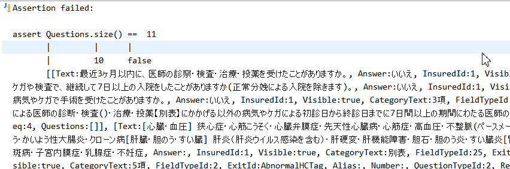

Created: 2016-06-21 Tue 14:16
Adding Groovy to Maven based Java project
<dependency> <groupId>org.codehaus.groovy</groupId> <artifactId>groovy-all</artifactId> </dependency>
Use modular approach groovy-jsr223, groovy-json, groovy-xml, groovy-test
<plugin> <groupId>org.apache.maven.plugins</groupId> <artifactId>maven-compiler-plugin</artifactId> <version>3.1</version> <configuration> <source>${java.version}</source> <target>${java.version}</target> <encoding>UTF-8</encoding> <compilerId>groovy-eclipse-compiler</compilerId> </configuration> <dependencies> <dependency> <groupId>org.codehaus.groovy</groupId> <artifactId>groovy-eclipse-compiler</artifactId> <version>2.9.2-01</version> </dependency> <dependency> <groupId>org.codehaus.groovy</groupId> <artifactId>groovy-eclipse-batch</artifactId> <version>2.4.3-01</version> </dependency> </dependencies> </plugin>
In case of IDE start using groovyConsole
Project → Run As → Groovy Console
Instead of Java tests write groovy test.
Start from renaming SomethingTest.java into
SomethingTest.groovy
In Eclipse could use context menu
Running commands
mvn clean test
mvn clean verify
should yield the same result.
In Eclipse one could run Alt-Shift-X, T to run file using JUnit
plugin (or context menu Run As -> JUnit Text)
Use string as a test method name
@Test void "BeatHandler should send beats to symphony" () { def result = symphonyService.sendBeat(beat) assert result != null }
Use Groovy assert
assert Questions != null assert Questions.size() == 11
Error will yield comprehensive error message

No explicit typing, semicolons, etc
def nested = q.Questions assert nested.size() == 0
Instead of get/set methods or Map access use property
notation .
resourceGroup.getResourcePrototype().getName() == SERVER_TYPE_NAME resourceGroup.resourcePrototype.name == SERVER_TYPE_NAME resourcePrototype.setName("something") resourcePrototype.name = "something"
Test assertions in Java
assertThat((String) c.get("firstName"), is("Stanley")); assertThat(c.get("address"), is(notNullValue())); assertThat(((Map) c.get("address")).get("zip"), is(notNullValue())); assertThat((String) ((Map) c.get("address")).get("zip"), is("56341"));
Become much easier to read
assertThat(c.firstName, is("Stanley")); assertThat(c.address, is(notNullValue())); assertThat(c.address.zip, is(notNullValue())); assertThat(c.address.zip, is("56341"));
Easily creating maps, lists
Map<String, Object> object = Maps.newHashMap( ImmutableMap.<String, Object>of( "key1", "value1", "key2", "value2")); def object = [key1: "value1", key2: "value2"]
Easily check data structure (aura_output_json is a Map of maps
of maps)
// check for no nested questions or all nested questions are NPCL aura_output_json.Questions.each { q -> def nested = q.Questions assert nested.size() == 0 || ( nested.size() > 0 && nested.findAll({qq -> qq.Alias == 'NPCL' }).size() == nested.size() ) }
Easily check structured data (XML, JSON) with GPath
def simpleModel = new JsonSlurper().parseText('''{ "application": { "flowStateId": "54faf596-7659-42dd-839d-2a5f346ca27c", "insured": { "middleName": null, "lastName": "ヂテ", "firstNameKanji": "世丘", "lastNameKanji": "专丕", ..... ''') assert simpleModel.application.insured.middleName == null
To make code even better use DSL
Examples in AuraPostScriptTest.groovy and
HarmonyGroovyScriptsTest.groovy
Result in following unit tests
@Test void "Testing issue HA-6385" () { withContextFrom 'aura/ha_6385_app.json' run 'scripts/AuraPostScript.groovy' then { def aura_output_json = application.aura.general.aura_output_json assert aura_output_json != null assert aura_output_json.Questions.size() == 8 assert aura_output_json.Questions.findAll({it.Visible == true}).size() == 8 } }
Typical form definition in Mongo
{
"preAction": {
"scriptLanguage" : "GROOVY",
"action" : ""
},
"postAction": {
"scriptLanguage" : "GROOVY",
"action" : ""
},
"visibilityAction": {
"scriptLanguage" : "GROOVY",
"action" : "view.visibility { true }"
}
}
Whether form is available FlowFlowService
Form is fixed to closure
view.visible {
// boolean
}
Theoretically this action is executed before form is sent to a
client. However see StartNewCommandHandler, NextCommandHandler,
etc.
Theoretically action is executed after form is submitted. However
see StartNewCommandHandler, NextCommandHandler, etc.
DSL words are located in com.metlife.harmony.scripts.groovy.dsl
All the DSL words are used as function applications
public class DSLWord extends Closure<T> { public T call (Object... arguments) { // code } }
Run groovy scripts with runScript
runScript('/scripts/QuestionFilter.groovy')
Could use path that exists in the file system (i.e. Spring resource)
Or corresponding document from scripts collection.
@Scriptable
Expose any Spring bean to the script using @Scriptable
@Scriptable @Service public class DataService implements ApplicationListener<ContextRefreshedEvent> { // ... }
Caveat: bean is available by its name.
Write in Java or Groovy or both. Not only tests but actual code.
I use STS 3.7.3 which is based on Eclipse 4.5 (Mars)
Plugins to have when dealing with groovy
Groovy plugin comes with IDE and most of the functionality works out of the box.